① 照節次讀：每一節先讀說明、動手玩互動元件，預測結果再按按鈕驗證。 ② 對照講義：頁上 §徽章對應 cppds 章節；講義的完整程式收在各節的收合區，預期輸出放在收合區外，可以先猜輸出再展開程式對照。 ③ 每節做 quiz：答錯就回到該節重讀，不要往下跳。 ④ 最後翻 關鍵詞彙卡（37 張）自測術語（中文為主、術語附英文），並用 REF 總覽區當速查表，章末的重點回顧可以用來複習。標「選讀」的 AVL 內部實作與標「（補充）」的收合區是課堂沒細講的延伸，第一輪可略過。
樹（tree）這個資料結構出現在作業系統、編譯器、資料庫、網路路由、機器學習等幾乎每一個領域。不同於我們前面學過的線性結構（list、stack、queue），樹是階層式的：一個節點可以連到多個子節點，整體組成一個由根（root）往下分支的層次。
電腦科學裡的樹有根（root）、分支（branch）與葉（leaf），只是畫法和自然界的樹相反：根在最上面，葉在最下面。第一個例子是生物分類樹。
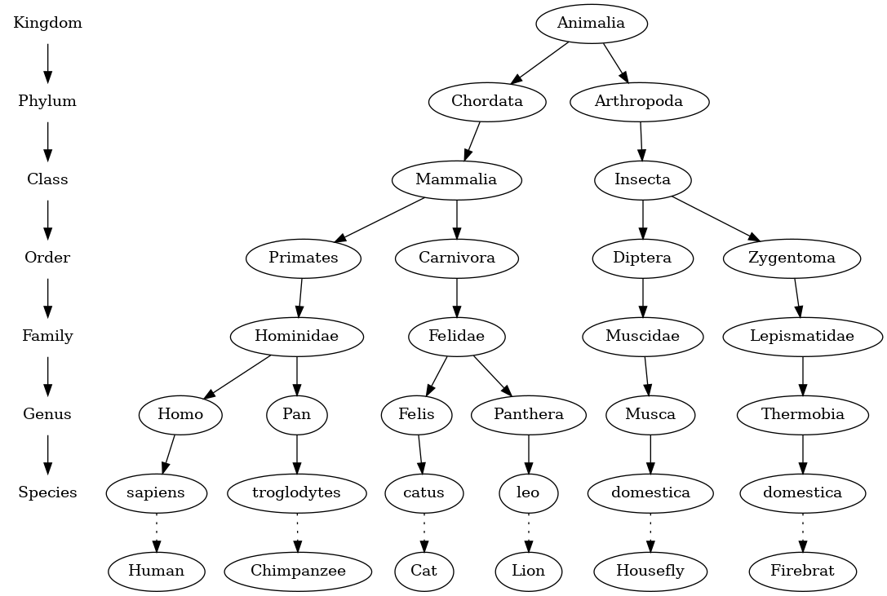
這個例子說明樹是階層式（hierarchical）的：越上層越一般，越下層越具體。從最上層的界（kingdom）往下，依序是門、綱、目、科、屬、種。每往下一層，就回答一個問題，選擇符合答案的那條路徑。
從這個例子還能看出樹的另外兩個性質：
第二個例子是每天都會用到的檔案系統。目錄（資料夾）組成一棵樹，從根目錄走到任何一個子目錄的路徑，就是它唯一的路徑名稱。
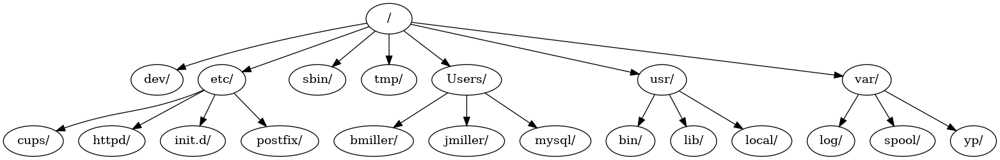
每一節都採相同的版面：左邊是視覺化畫布與控制列，右邊是即時統計、虛擬碼與複雜度分析。請大膽地按 ▶ 開始 觀察完整動畫，或按 → 單步 一格一格觀察。
| 術語 | 意義 |
|---|---|
| 節點（node） | 樹的基本組成。節點有一個名稱，稱為鍵（key）；也可以存放其他資料，稱為值（value）或酬載（payload）。 |
| 邊（edge） | 連接兩個節點，表示它們之間有關係。除了根以外，每個節點都恰好有一條從別的節點進來的邊；出去的邊可以有好幾條。 |
| 根（root） | 樹中唯一沒有進來的邊的節點。 |
| 路徑（path） | 由邊連起來的一串有順序的節點，例如 Mammalia → Carnivora → Felidae → Felis → catus。 |
| 子節點（children） | 從同一個節點出發、經由邊連到的那些節點，是該節點的子節點。 |
| 父節點（parent） | 一個節點是它用出去的邊連到的所有節點的父節點。 |
| 兄弟節點（sibling） | 有同一個父節點的節點。檔案系統裡的 etc/ 和 usr/ 是兄弟節點。 |
| 子樹（subtree） | 一個父節點與它所有子孫，連同之間的邊。 |
| 葉節點（leaf node） | 沒有子節點的節點。 |
| 層（level） | 從根走到節點 $n$ 的路徑上的邊數。根在第 0 層。 |
| 高度（height） | 樹中所有節點的最大層數。只有一個節點的樹高度是 0。 |
在進入演算法之前，我們先把語言對齊。把滑鼠移到下方互動樹的任何一個節點上，右側面板會即時顯示該節點的所有屬性；點擊節點則會高亮它的「祖先路徑（path-to-root）」與「子樹（subtree）」。
定義一的圖：方框是節點，箭頭是邊，箭頭方向表示連接的方向（從 parent 指向 child）。
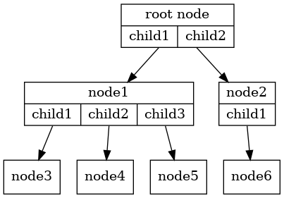
定義二是遞迴的：每個三角形代表一棵子樹，子樹的根用一條邊接到上層的根。
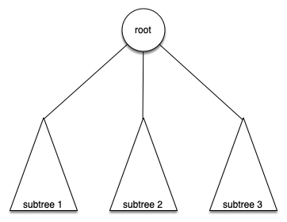
本章我們專注於每個節點最多有兩個子節點的樹，稱為二元樹。我們特別命名為 leftChild 和 rightChild，這個順序在解析樹（運算子的左右運算元）和 BST（小的在左、大的在右）中是有語義的。
有了術語之後，接著定義要用哪些操作來建立與操作一棵二元樹。這組操作就是二元樹的抽象資料型別（ADT）。
| 操作 | 作用 |
|---|---|
BinaryTree(root) | 建立一個節點，值是 root，兩個子指標都是 NULL。 |
getRootVal()／setRootVal(value) | 讀取或替換目前節點的值。 |
getLeftChild()／getRightChild() | 回傳左、右子樹的指標；那一邊是空的時候回傳 NULL。 |
insertLeft(value)／insertRight(value) | 配置一個新節點接成左（右）子節點；原本已經有子節點時，把它往下推一層（下一節說明）。 |
getLeftChild() 回傳的是一整棵子樹（BinaryTree*），所以可以接著用 -> 呼叫子樹的操作，一路往下走到任何深度。
實作一棵樹時，最關鍵的決定是內部要用什麼方式儲存。本課程使用節點與參考（nodes and references）：每個節點是一個物件，用指標連到它的子樹。下一節就用這個方式寫出 BinaryTree 類別。
本課程用 nodes and references（節點物件 + 指標）表示二元樹：每個 BinaryTree 帶 key、leftChild、rightChild，子指標不是 NULL 時就指向另一棵遞迴定義的樹。
用節點與參考表示一棵樹時，定義一個類別，存放根的值以及左、右子樹。下圖的六個標籤就是六個 BinaryTree 物件，靠子指標連在一起。
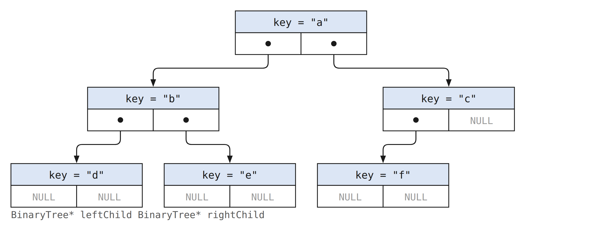
在 C++ 裡，leftChild 與 rightChild 是指向其他 BinaryTree 物件的指標；NULL 表示那一邊是空的子樹。節點的值可以是任何型別，這個教學版本用 string。
要加左子節點，就配置一個新的 BinaryTree，把位址存進 leftChild。插入分兩種情況：原本沒有左子節點時，直接接上；原本已經有左子節點時，新節點插在中間，原本的左子樹變成新節點的左子樹，等於被往下推一層。insertRight 對稱地處理右邊。
最後補上讀取子樹與讀寫根值的函式，一個簡單的二元樹類別就完成了。
下面的動畫用這些函式一步一步長出一棵樹。
insertRight 對稱地處理右邊。
完整的類別在 pythonds3/cppds/binarytree.hpp。下面的程式建立根 "a"，再加上左子 "b" 與右子 "c"，最後把右子的值改成 "hello"。
a 0 b c hello
第二行的 0 是空的左子指標：NULL 用 cout 印出來就是 0。getRightChild() 回傳整棵右子樹，所以能接著呼叫 setRootVal 修改它。
巢狀串列版把「根的值」放在第 0 格、左子樹放第 1 格、右子樹放第 2 格； 每個子樹自己又是同樣格式的串列，結構本身就是遞迴的。 葉節點就是「值＋兩個空串列」。它還有個好處：要表示多元樹（超過兩個子樹），再多掛一個串列就好。
C++ 是靜態型別語言，寫不出這種「值和串列混住」的巢狀字面值， 所以我們直接採用 nodes and references 表示法（對 C++ 來說本來就更自然）。
解析樹（parse tree）可以表示句子或數學運算式這類有結構的東西。下圖是一個簡單句子的階層結構；把句子表示成樹之後，就能用子樹分別處理句子的各個部分。
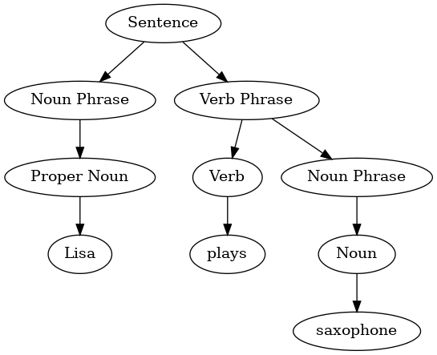
對於完全括號化（fully parenthesized）的表達式，例如 ((7 + 3) * (5 - 2))，我們可以把它變成一棵樹：運算子放在內部節點、運算元放在葉子上。樹的階層自然就反映了運算優先序：評估時只要遞迴地先算左子樹、再算右子樹、最後套用 root 的運算子。
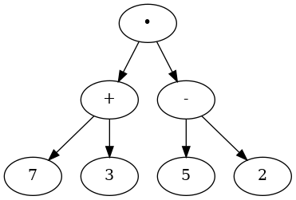
乘法的優先順序比加法、減法高，但因為括號，乘法之前必須先算出括號裡的加法與減法。樹的階層正好表達了這個順序：要算根的乘法，得先算出左子樹（7 + 3 = 10）與右子樹（5 - 2 = 3）。算完的子樹可以整棵換成一個節點：
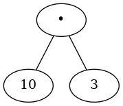
接下來要處理三件事：
第一步是把運算式切成 token，存成 vector<string>。token 有四種：左括號、右括號、運算子、運算元。讀到左括號表示開始一個新的子運算式，所以要建立一個新節點；讀到右括號表示一個子運算式結束。運算元一定是葉節點，運算子一定有左右兩個子節點。由此得到四條規則：
(：在目前節點新增一個左子節點，往下移到這個左子節點。+、-、*、/ 之一：把運算子存進目前節點，新增一個空的右子節點，往下移到右子節點。)：回到目前節點的父節點。以 $(3 + (4 * 5))$ 為例，切出的 token 是 {"(", "3", "+", "(", "4", "*", "5", ")", ")"}。從一個空的根開始，一次套用一條規則。下圖的灰色節點是目前節點：
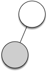
讀到 (：新增左子節點，往下移到它。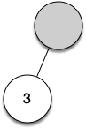
讀到 3：把目前節點設為 3，回到父節點。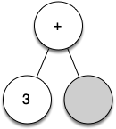
讀到 +：根設為 +，新增右子節點並往下移。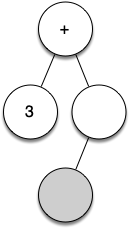
讀到 (：在目前節點新增左子節點，往下移。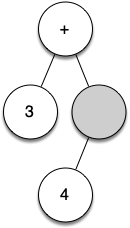
讀到 4：設為 4，回到父節點。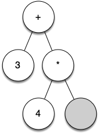
讀到 *：設為 *，新增右子節點並往下移。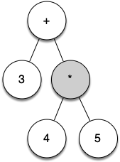
讀到 5：設為 5，回到 *。接著兩個 ) 再往上回到根，建樹完成。建構演算法用一個 stack 追蹤 parent：當我們往下走進一個 child（看到 ( 或運算子）就把當前節點 push 進 stack；當需要回到 parent（看到 ) 或讀完一個數字）就 pop。
四條規則就是程式中 if／else if 的四個分支。往下走到子節點用 getLeftChild()、getRightChild()；回到父節點則靠 pStack：往下走之前先把目前節點 push，要回去時再 pop。
這個教學版本假設輸入格式正確，而且 token 之間以空白分隔。實際使用的解析器遇到既不是括號、也不是運算子或數字的 token 時，應該丟出 invalid_argument。
3 + 4 * 5
inorder 依「左子樹、根、右子樹」的順序印出節點，下一節會說明。印出的運算式少了括號。
( → 新增 left child，下移到 left；push parent。+ - * / → 設 root 為運算子，新增 right child，下移到 right；push parent。) → pop 回到 parent。
evaluate 函式就是 postorder 走訪 + 在 root 執行運算：解析樹的計算演算法就是走訪演算法的特例。
建好解析樹之後，可以利用樹的階層性質，遞迴地計算每一棵子樹來求出整個運算式的值。
樹的遞迴演算法常用葉節點當作 base case。解析樹的葉節點一定是運算元，數字不需要再處理，直接回傳葉節點存的值即可。遞迴步驟是對左右兩個子節點呼叫 evaluate，每次呼叫都往葉節點靠近一層。最後把兩個遞迴呼叫的結果，用父節點存的運算子合起來。
運算子存成 string，用 if／else if 決定要做哪一種運算；也可以改用字元和 switch。
23
在根節點，evaluate() 看到 +：左子樹是葉節點，回傳 3；右子樹的 * 把葉節點 4 和 5 相乘得到 20。最後根回傳 3 + 20 = 23。
「走訪」（traversal）就是按某種順序拜訪樹中每個節點。對二元樹有三種對稱遞迴的走訪，差別只在「何時拜訪 root」：
先用一本書當例子。書是樹的根，每一章是根的子節點，每一節是章的子節點，小節又是節的子節點。
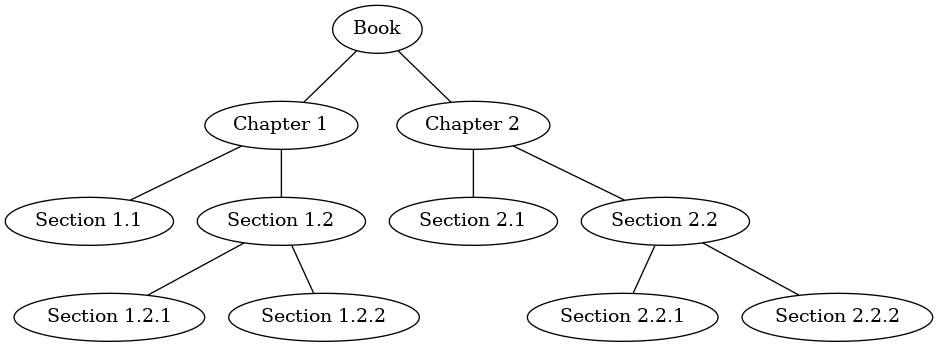
想從頭到尾讀完這本書，前序走訪的順序就是閱讀順序：從根 Book 開始，遞迴走左子樹 Chapter 1，再遞迴走它的左子樹 Section 1.1。Section 1.1 沒有子節點，回到 Chapter 1，接著走右子樹 Section 1.2，依序讀 Section 1.2.1、Section 1.2.2。Chapter 1 讀完後回到 Book，再用同樣的方式讀 Chapter 2。
寫成外部函式的前序走訪很簡潔：base case 只有 tree == NULL；否則先印出根，再遞迴走左子樹與右子樹。對前面的解析樹，它印出 + 3 * 4 5，也就是運算式的前序（prefix）形式。
Book Chapter1 Section1.1 Section1.2 Section1.2.1 Section1.2.2 Chapter2 Section2.1 Section2.2 Section2.2.1 Section2.2.2
輸出就是閱讀順序。下方動畫選「講義：書的章節樹」，可以一步一步看這個順序與呼叫堆疊。
preorder 也可以寫成 BinaryTree 的成員函式，作用在 this 上。這時候不能對 NULL 呼叫成員函式，所以遞迴之前要先檢查 leftChild、rightChild 是不是 NULL：
這個例子比較適合寫成外部函式。很少有人只想把樹走一遍，通常是要在走訪的同時完成別的工作；外部函式比較容易改寫成其他用途。下一個例子會看到，後序走訪的寫法和前面計算解析樹的 evaluate 幾乎一樣，所以其餘的走訪都寫成外部函式。
後序走訪和前序只差在印出根的位置：先遞迴走完左右子樹，最後才印根。對解析樹，它印出 3 4 5 * +，也就是後序（postfix）形式。
後序走訪的常見用途就是計算解析樹。假設樹裡只存運算式，照著後序走訪的骨架重寫求值函式：
和 postorder 相比，差別只在最後不是印出鍵，而是回傳值。兩個遞迴呼叫的回傳值存在 result1、result2，再用根的運算子合起來。
中序走訪先走左子樹，再拜訪根，最後走右子樹。對解析樹，它印出 3 + 4 * 5，是熟悉的中序（infix）形式，但少了括號。
preorder: + 3 * 4 5 inorder: 3 + 4 * 5 postorder: 3 4 5 * + postordereval: 23
前序得到 prefix、中序得到 infix、後序得到 postfix；postordereval 依後序的順序計算，結果和 evaluate 一樣是 23。
| Preorder | + 3 * 4 5 | 前綴表達式 |
| Inorder | 3 + 4 * 5 | 中序（沒括號會失精度） |
| Postorder | 3 4 5 * + | 後綴表達式 |
對解析樹做一般的中序走訪，得到的運算式沒有括號。稍微修改中序走訪的骨架，就能還原完整括號的版本：在遞迴走左子樹之前印左括號，走完右子樹之後印右括號。
((3)+((4)*(5)))
每一棵子樹都包了一層括號，連只有一個數字的葉節點也被包起來，例如 (3)。
修改 printExp，讓葉節點的數字不要被括號包住。目標是印出 (3+(4*5))，而不是 ((3)+((4)*(5)))。下面的起始程式可以直接執行，目前輸出的還是多餘括號的版本。
((3)+((4)*(5)))
葉節點的左右子樹都是 NULL。在加括號之前先檢查這件事，葉節點就直接回傳數字本身；其他節點照原本的方式在兩側加括號。
(3+(4*5))
優先佇列每次取出優先級最高的元素。若用 vector，維持排序會讓取最小為 $O(1)$、插入因搬移而為 $O(n)$；不排序則插入 $O(1)$、尋找並刪除最小值 $O(n)$。Binary heap 讓 insert 與 delete-min 都是 $O(\log n)$。
binary heap 畫出來像一棵完全二元樹，實際上存在一個 vector 裡；在最小堆積（min-heap）中，最小的鍵在索引 0。插入與刪除都是 $O(\log n)$，讀取最小值是 $O(1)$。
| 操作 | 作用 |
|---|---|
BinaryHeap() | 建立空的最小堆積。 |
insert(k) | 插入一個鍵，$O(\log n)$。 |
findMin() | 回傳最小值但不移除，$O(1)$。 |
delMin() | 移除並回傳最小值，$O(\log n)$。舊版的課程程式把同一個操作叫做 delet()。 |
isEmpty()、size() | 回報堆積是否為空、有幾個元素。 |
buildHeap(values) | 由下往上一次建好整個堆積，$O(n)$。heapify(values) 是保留下來的同義舊名。 |
3 5 7 11
不管以什麼順序插入，每次取出的都是目前最小的值。
(2, compile)、(5, backup)、(1, interrupt)、(3, render) 放進 min-heap 後，依序取出 interrupt、compile、render、backup。Heap 只保證 root 是當前最小者，不會把其餘元素完整排序。
為了保證對數時間，樹必須保持平衡：根的左右子樹節點數大致相同。堆積用完全二元樹（complete binary tree）來維持平衡：除了最底層之外每一層都填滿，最底層由左往右填。
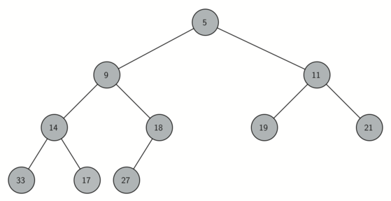
完全二元樹可以存在一個 vector 裡，不需要節點指標。索引從 0 開始時，索引 $p$ 的左子在 $2p+1$、右子在 $2p+2$；非根節點 $i$ 的父節點，在 C++ 中用整數除法 (i - 1) / 2 算出。
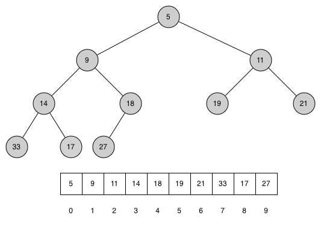
堆積存放資料的方式依靠堆積順序性質（heap order property）：每個節點 $x$ 與它的父節點 $p$，$p$ 的鍵小於或等於 $x$ 的鍵。上圖的樹也滿足這個性質。因為樹的形狀完全由索引決定，類別只需要一個資料成員：
下面的動畫一開始就是圖中的 heap。用「講義」那一列按鈕可以直接載入插入 7、delMin 與 buildHeap 三個例子。
插入時先把新元素接在 vector 的尾端，這樣仍然是完全二元樹，結構性質不變。但新元素可能比父節點小，破壞順序性質。這時拿它和父節點比較，比父節點小就交換，一路往上浮（percolate up），直到不再比父節點小，或已經到達根。
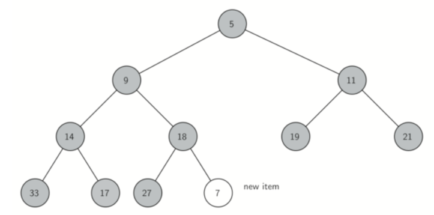
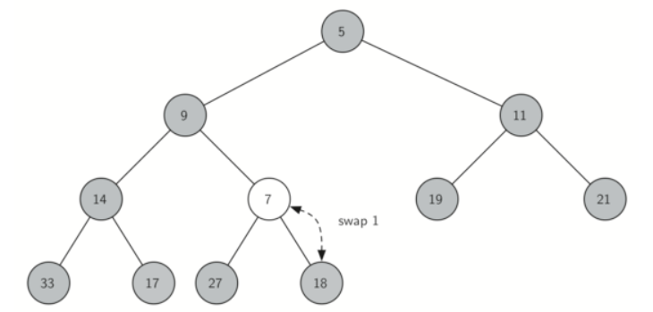
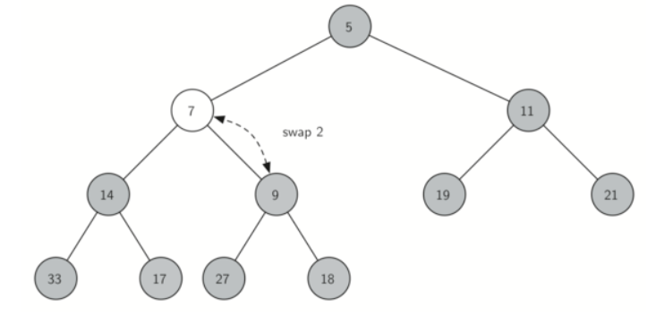
往上浮的時候，新元素和父節點之間的順序性質恢復了，兄弟節點那一側的順序性質也維持不變。新元素很小的話，可能要一路換到根。
最小值就在 heap[0]，所以 findMin() 只要讀它。delMin() 的難處在於移除根之後，要同時恢復結構性質與順序性質，分兩步做：先把根和 vector 最後一個元素交換並移除最後一格，結構維持完整；再對新的根呼叫 percDown(0)，讓它和較小的子節點交換，一路往下沉，直到比兩個子節點都小。
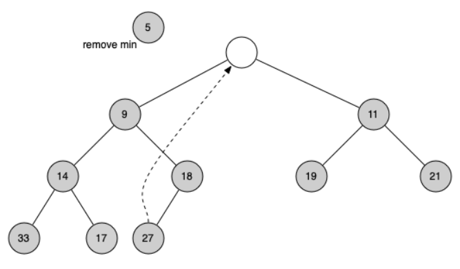
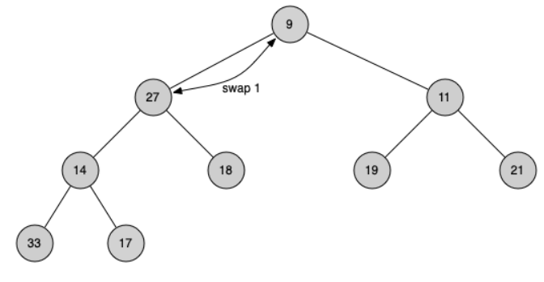
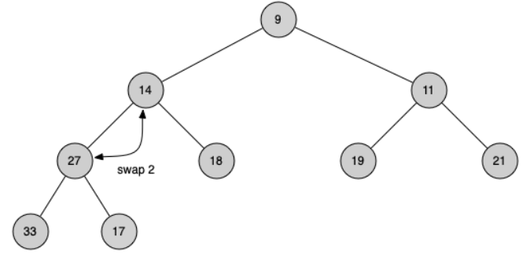
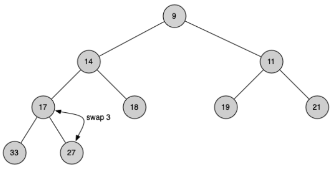
5 7 11 14 9 19 21 33 17 27 18 5 9 14 11 17 18 19 21 33 27
第一行是插入 7 之後的 vector：7 換到索引 1，9 和 18 各往下一層。第二、三行是另一份同樣的 heap 執行 delMin：回傳 5，27 從根沉到索引 8。
insert，每個 $O(\log n)$，總共 $O(n \log n)$。但 heapify 從陣列中間 $\lfloor n/2 \rfloor - 1$ 倒著做 perc_down：底層大量節點高度只有 0 或 1，往下移的成本很小。嚴謹分析會用 $\sum_{h=0}^{\log n} \frac{n}{2^{h+1}} \cdot h = O(n)$。直觀上：樹底層節點多但移動少，頂層節點少但移動多，兩者相乘的總和是 $O(n)$。
一種建堆的方法是逐一插入 $n$ 個鍵。每次 insert() 接在尾端，最壞要往上浮過整個樹高，所以每次 $O(\log n)$，逐一插入共 $O(n\log n)$。插入並不需要把元素塞進排序好的 vector 中間；順序性質只規範父節點和子節點。
由下往上的 buildHeap()（舊名 heapify()）比較快：從最後一個非葉節點開始，往根的方向逐一呼叫 percDown()，總成本是 $O(n)$。索引大於等於 heap.size() / 2 的都是葉節點，不需要處理。
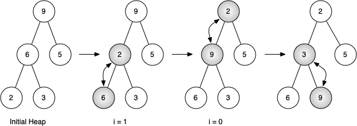
當 i = 0 時，從根往下沉可能要跨好幾層。percDown() 每次交換後都會再檢查較小的子節點，所以 9 會一直往下移，直到最底層。
2 3 5 6 9
輸出和圖的最後一棵樹一致。在上面的動畫按「講義：buildHeap [9, 6, 5, 2, 3]」可以逐步看 i = 1、i = 0 兩輪。
3 4 9 5 12 15 10 8 14 18
每個父節點都不大於子節點，例如索引 1 的 4 小於索引 3、4 的 5 和 12；但整個 vector 並沒有排序。
$O(n)$ 的上界可以依節點高度計算工作量：大約一半的節點是葉節點，不必移動；約 $n/4$ 個節點最多下沉一層，$n/8$ 個最多兩層，依此類推。總和 $\sum_{h\ge0}(n/2^{h+1})h=O(n)$，不是 $O(n\log n)$。
把前面的函式放在一起看。整個類別只有一個成員 vector<int> heap：樹形是用索引「算」出來的
（左子 2i+1、右子 2i+2、父 (i-1)/2），從頭到尾不需要指標。
不管資料以什麼順序進來，heap[0] 永遠是目前最小值，
delet() 也總是取出最小者。findMin() 讀取最小值，delMin() 移除最小值，size() 回傳元素數，buildHeap() 從一批資料建堆。delet() 與 heapify() 分別是 delMin() 與 buildHeap() 的別名。
有了 heapify（$O(n)$）和 $n$ 次 delete-min（每次 $O(\log n)$），教學版可把結果寫到另一個 vector，總時間 $O(n \log n)$、額外空間 $O(n)$。真正的 in-place heapsort 則直接在原陣列管理 heap 範圍。
用 buildHeap()（或舊名 heapify()）與 delMin()（或舊名 delet()）寫一個函式，在 $O(n\log n)$ 時間內排序一個 vector。目標輸出是 1 2 3 5 7 8 9 10 15。可用的成員函式有 insert、findMin、delMin、size、buildHeap、isEmpty，以及舊名 delet、heapify；對空堆積呼叫 findMin 或 delMin 會丟出 underflow_error。
buildHeap 花 $O(n)$，接著 $n$ 次 delMin 各 $O(\log n)$，每次取出的都是剩下的最小值，依序放進 sortedList 就排好了。
1 2 3 5 7 8 9 10 15
想看更多堆積操作的例子，可以參考 VisuAlgo 的 heap 動畫。
Map ADT 把 key 對應到 value（就像 C++ 的 unordered_map）。我們已經學過兩種實作：排序陣列 + binary search（搜尋 $O(\log n)$ 但插入 $O(n)$）和雜湊表（平均 $O(1)$ 但有衝突風險、無排序）。BST 提供第三條路。
二元搜尋樹是存放鍵值對的第三種方式。這裡要利用二元樹的結構讓搜尋有效率，元素放在樹中的哪個確切位置並不重要。
| 操作 | 作用 |
|---|---|
BinarySearchTree() | 建立空的 map。 |
put(key, value) | 插入一組鍵值對；鍵已經存在時，改成新的值。 |
get(key) | 回傳鍵對應的值；這個簡化的字串版本在鍵不存在時回傳 ""。 |
remove(key) | 刪除一組鍵值對；鍵不存在時丟出 invalid_argument。 |
length() | 回傳不同鍵的個數。 |
contains(key) | 回傳 bool，表示鍵在不在樹中。 |
put(key, value) 遇到重複 key 時更新 value、不增加 size。remove() 釋放被移除節點；整棵樹具備 destructor、deep copy 與 move 行為，避免兩個物件共同擁有同一批 pointers。
平衡樹子類別透過 protected virtual insertOrAssign() hook 延伸插入，不繞過公開 put() 的 size 契約。
BST 依靠一個性質：比父節點小的鍵都在左子樹，比父節點大的鍵都在右子樹，稱為 BST 性質。下圖只畫鍵，不畫值。
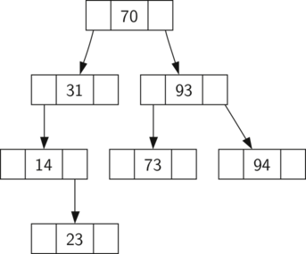
這棵樹是依序插入 $70, 31, 93, 94, 14, 23, 73$ 的結果。70 最先插入，所以是根。31 比 70 小，成為 70 的左子；93 比 70 大，成為右子。94 比 70 和 93 都大，成為 93 的右子；14 比 70 和 31 都小，成為 31 的左子。23 也比 31 小，但比 14 大，所以成為 14 的右子。
BST 同樣用節點與參考實作。因為必須能建立並操作一棵空的樹，實作分成兩個類別：BinarySearchTree 保存指向根節點的指標，TreeNode 是樹中的節點。外層的公開函式大多先檢查樹是不是空的，再把工作交給以根為參數的輔助函式；樹是空的或要刪除根的時候，需要特別處理。
完整的標頭還提供複製與移動指定，確保兩棵樹不會共用同一批節點。
TreeNode 提供許多輔助函式，判斷自己是左子還是右子、有沒有子節點，讓 BinarySearchTree 的函式好寫很多。
每個 TreeNode 都存了 parent 指標，在 remove() 重新接上子節點、或拆出中序後繼者時特別有用。建構子的 parent 參數有預設值，所以可以建立根（parent == NULL），也可以建立連到父節點的子節點。
put() 把每一次插入（包括建立根）都交給受保護的虛擬函式 insertOrAssign()。平衡樹的子類別可以覆寫這個函式，而不會繞過公開的 put() 與它對 size 的計算。插入的步驟是：
TreeNode，接在上一步找到的位置。鍵重複時採用 insert-or-assign：只替換既有的值，不建立新節點，size 也不變，符合 Map ADT 的語意。課程標頭用明確的 put(key, value)，例如 myTree.put("a", "apple")，再用 myTree.get("a") 取值；沒有提供 operator[]。
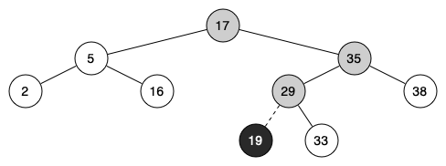
get() 比 put() 更簡單：遞迴往下找，找到相同的鍵就回傳節點的值，走到空指標就表示不存在。私有輔助函式 _get() 回傳的是 TreeNode*，所以 get()、contains() 與 remove() 都能重用同一段搜尋。
BST 的 put 與 get 直觀，但刪除是最麻煩的操作，因為刪掉一個內部節點後，必須維持 BST 性質。我們把情境分成三類：
NULL。最簡單。刪除的第一步是用 _get() 找到要刪的節點；找不到就丟出例外。樹只有一個節點時，要刪的就是根，但仍然要確認根的鍵和要刪的鍵相同，_get() 已經做了這個檢查。刪除根的情況在 _delete() 裡處理：刪掉最後一個節點時，把 root 設為 NULL 並釋放節點。
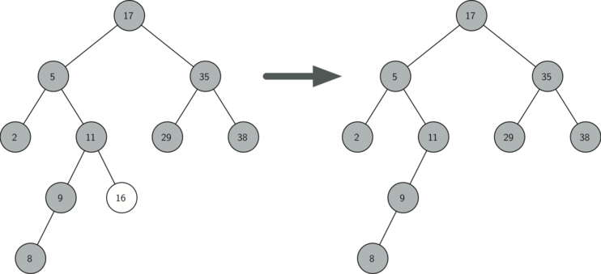
目前節點沒有子節點時，只要刪掉它，並把父節點指向它的指標設為 NULL。
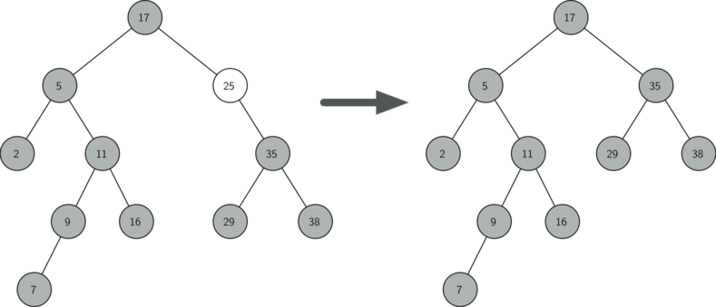
只有一個子節點時，直接把這個子節點提上來取代父節點。左右兩種情況對稱，這裡只看目前節點有左子節點的情形：
leftChild 指向這個左子節點。rightChild 直接接到唯一的子節點，並更新子節點的 parent。root 設為它唯一的子節點（或 NULL），並清掉新根的 parent 指標。每一種情況最後都要刪掉被移除的節點。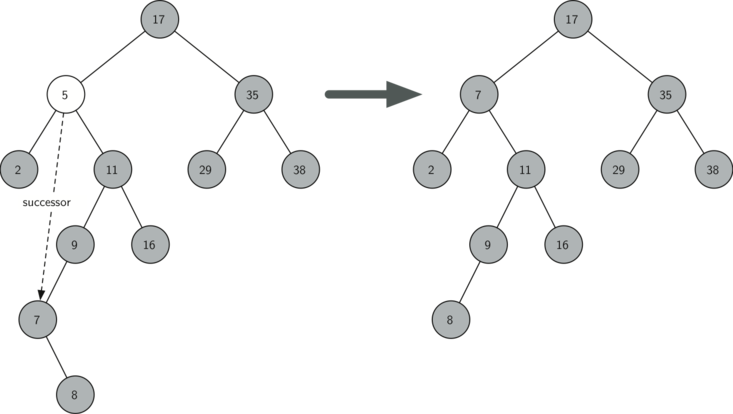
有兩個子節點時，不能直接把其中一個提上來。要在樹中找一個節點來取代被刪的節點，而且左右兩棵子樹的 BST 性質都要維持；這個節點就是鍵次大的那一個，稱為後繼者（successor）。後繼者最多只有一個子節點，所以用 spliceOut() 把它拆出、接好它的子節點，再把它的鍵和值複製到目標節點，最後刪掉後繼者節點。
刪除時目標節點一定有右子樹，所以後繼者就是右子樹的最小值。findMin() 沿著 leftChild 一直走到下一個是 NULL 為止，最左邊的節點就是子樹中最小的鍵。
這和中序走訪由小到大印出 BST 的性質是同一回事。一般而言找後繼者要考慮三種情況：節點有右子樹時，後繼者是右子樹的最小鍵；沒有右子樹且自己是左子時，父節點就是後繼者；沒有右子樹且自己是右子時，後繼者是父節點的後繼者（不算自己）。刪除時目標節點有兩個子節點，只會用到第一種。
側欄的 findSuccessor 是刪除專用的精簡版（刪除時節點必有右子樹，successor 就是右子樹的最小值）。
一般的 successor 有三種情境（下方左欄），另外兩種在沒有右子樹、需要往上找時才用得到。
successor 找到之後，用 spliceOut() 把它從原位置「縫」出來：
successor 保證最多一個 child，所以只有兩種縫法。
要依鍵的順序處理 BST 的每一個鍵，就用前面學過的中序走訪。課程的類別直接印出值；若要重複使用，可以改成把鍵依序放進一個輸出 vector。每次遞迴處理一棵較小的子樹，base case 是 NULL 指標；在左右兩次遞迴之間處理節點，得到的鍵就是排好的。走訪每個節點一次，時間 $O(n)$，遞迴深度 $O(h)$。
quick lazy There are 9 items in this tree There are 8 items in this tree brown dog fox jumps lazy over quick the
最後一行依鍵的順序印出值。刪掉 "a" 之後剩 8 個鍵，所以第一個值是 b 對應的 brown。
想看更多 BST 插入、搜尋與刪除的例子，可以參考 VisuAlgo 的 BST 動畫。
用 put() 和中序走訪，在平均 $O(n\log n)$ 時間內排序一個 vector；再說明為什麼不平衡的 BST 最差會是 $O(n^2)$。目標輸出是 a b d f j l o q t：BST 的中序走訪一定是排好的。
課程類別的 inorder 只會印出值，所以解答另寫一個 inorderKeys，在中序走訪時把鍵放進 result。平均每次 put 是 $O(\log n)$，共 $O(n\log n)$；但如果輸入已經排好，每個新鍵都接在最右邊，第 $k$ 次 put 要走過 $k-1$ 個節點，總共 $1+2+\cdots+(n-1)=O(n^2)$。
a b d f j l o q t
BST 的 put、get、contains、remove 都沿 root-to-leaf path 前進，時間複雜度正比於樹高 $h$。所以關鍵問題是：給定 $n$ 個節點，$h$ 會是多少？
先看 put()。限制它效能的是樹的高度：高度是根到最深的葉節點之間的邊數，而找插入位置時每一層最多比較一次。鍵以隨機順序加入時，大約一半比根小、一半比根大，樹高大約是 $\log_2 n$。
二元樹的根那一層有 1 個節點，下一層 2 個，再下一層 4 個，深度 $d$ 那一層有 $2^d$ 個。完美平衡、高度為 $h$ 的二元樹共有 $2^{h+1}-1$ 個節點，反過來說高度就是 $\log_2 n$，也就是 put() 最多要做的比較次數。
可惜只要把鍵依排序好的順序插入，就能建出高度 $n-1$ 的樹：
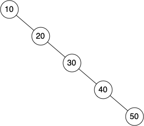
這時 put 是 $O(n)$。樹高同樣限制 get()、contains() 與 remove()：最差情況都要走一條長度為 $h$ 的路徑。remove() 可能還要再走一段路找後繼者，但那最多是另一段 $O(h)$；常數倍不影響上界。所以不平衡的 BST 最差是 $O(n)$，AVL 樹則是 $O(\log n)$。
| 操作 | 平均 | 最差 |
|---|---|---|
| put | $O(\log n)$ | $O(n)$ |
| get | $O(\log n)$ | $O(n)$ |
| del | $O(\log n)$ | $O(n)$ |
put 進 BST 再做 inorder traversal，平均得到 $O(n \log n)$ 的排序。但最差情況退化為 $O(n^2)$，這也是 quick sort 在最差情況下退化的同一個原因（pivot 選不好等於插入排序好的 keys 進 BST）。
BST 退化的原因是插入順序。AVL 樹（Adelson-Velsky 和 Landis，1962）讓樹在每次插入/刪除時自動旋轉，保證它一直是「近似平衡」。代價只是常數因子的開銷。
AVL 樹和一般 BST 一樣實作 Map ADT，差別只在效能。下圖是一棵右重的不平衡樹，節點上標的是平衡因子：
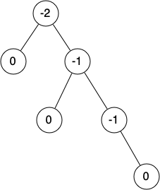
根的平衡因子是 -2：左子樹高度 0，右子樹高度 2。只要有節點的平衡因子超出 -1、0、1，就需要把樹調回平衡。
下面的旋轉示範（補充）把 LL、RR、LR、RL 四種不平衡各做一次，可以先看形狀怎麼變，旋轉的細節在本節後半段的選讀內容。
要求每個平衡因子都是 -1、0、1，能把 AVL 樹的高度限制在 $O(\log n)$。先看在這個條件下最不平衡的樹長什麼樣子。下圖是高度 0、1、2、3 時，節點最少的左重樹：
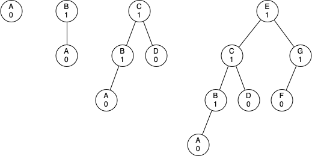
令 $N_h$ 為高度 $h$ 的 AVL 樹最少的節點數。高度以邊數計算時 $N_0=1$、$N_1=2$；最瘦的合法樹由一個根、一棵高度 $h-1$ 的最瘦樹和一棵高度 $h-2$ 的最瘦樹組成：
$$N_h = 1 + N_{h-1} + N_{h-2}$$
這和費氏數列很像。費氏數列定義為 $F_0=0$、$F_1=1$、$F_i=F_{i-1}+F_{i-2}$（$i\ge2$），而且 $F_i/F_{i-1}$ 越來越接近黃金比例 $\Phi=\frac{1+\sqrt5}{2}$，可以近似成 $F_i\approx\Phi^i/\sqrt5$。代入初始值可以驗證 $N_h=F_{h+3}-1$，所以
$$N_h = F_{h+3}-1 \approx \frac{\Phi^{h+3}}{\sqrt5}-1$$
移項後兩邊取以 2 為底的對數，解出 $h$：
$$h \approx \frac{\log_2(N_h+1)+\tfrac12\log_2 5}{\log_2\Phi}-3$$
$1/\log_2\Phi\approx1.44$，所以 $h$ 的成長不會超過大約 $1.44\log_2 n$（差一個加法常數）。
AVL 的效能分析與實作細節屬於選讀內容。課堂上只要知道：插入後沿路更新平衡因子，LL、RR 不平衡做一次旋轉，LR、RL 做兩次，每次旋轉 $O(1)$。
AVL 的 insertOrAssign() 跟 BST 幾乎一樣，唯一差別是掛上新節點後多呼叫一次
updateBalance()：它沿著 parent 指標往上修正平衡因子，
一發現 |bf| > 1 就地 rebalance()。旋轉最多兩次、每次 O(1)，
往上修正最多走 log n 層，所以 put 整體仍是 O(log n)。
上面的動畫可以對照著看：四個按鈕（LL/RR/LR/RL）正是 rebalance 的四個分支。刪除後的重平衡，講義留作練習。
插入新的葉節點之後，要更新它父節點的平衡因子：新節點是右子時，父節點的平衡因子減 1；是左子時加 1。同樣的規則可以遞迴地套用到祖父節點，甚至一路到根。遞迴有兩個停止條件：已經到達根，或某個父節點的平衡因子被調成 0。子樹的平衡因子變成 0 之後，它的高度沒有改變，祖先的平衡因子也不會變。
需要重新平衡時，用一次或多次旋轉（rotation）把樹調回平衡。
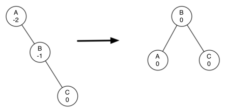
左旋的步驟：
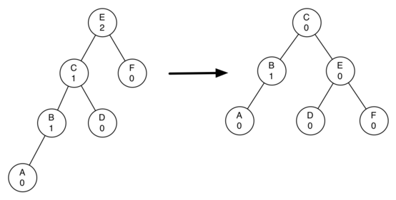
右旋對稱：
概念不難，但程式要依正確的順序搬動，才能維持 BST 的所有性質，而且每個 parent 指標都要更新。下面左欄是 insertOrAssign 的覆寫與 updateBalance，中欄是 rotateLeft（rotateRight 對稱）。rotateLeft 先用暫存變數記住新根，也就是舊根的右子，再把舊根的右子換成新根的左子；接著調整兩個節點的 parent 指標：舊根若是整棵樹的根，就把 root 改成新根，否則讓舊根的父節點改指向新根；最後把舊根的 parent 設為新根。
這段的 TreeNode*& slot 是「指標的參考」，修改 slot 會一起改到呼叫端保存的指標；auto* 讓編譯器推導指向的型別。static_cast<AVLTreeNode*>(slot) 把基底類別指標轉成衍生類別指標，前提是本樹的節點確實都由 AVLTreeNode 建立；它不會在執行時檢查型別，不能拿來轉換任意 TreeNode。override 要求編譯器確認此函式覆寫基底類別的 virtual 函式。
rotateLeft 最後兩行更新舊根與新根的平衡因子。其他節點都是整棵子樹一起搬動，平衡因子不受影響。問題是：不重新計算子樹高度，怎麼得到新的平衡因子？
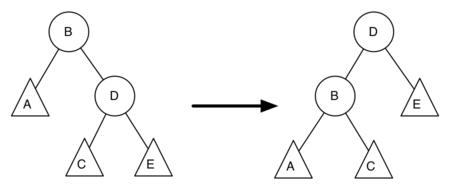
B、D 是旋轉的兩個節點，A、C、E 是它們的子樹，$h_x$ 表示以 $x$ 為根的子樹高度。依定義：
$$\begin{aligned}\text{new\_bal}(B) &= h_A - h_C\\ \text{old\_bal}(B) &= h_A - h_D\end{aligned}$$
D 的舊高度是它兩棵子樹中較高的再加 1，也就是 $h_D = 1 + \max(h_C, h_E)$，而 $h_C$、$h_E$ 在旋轉中沒有改變。代入第二式：
$$\text{old\_bal}(B) = h_A - (1 + \max(h_C, h_E))$$
兩式相減，$h_A$ 消掉：
$$\text{new\_bal}(B) - \text{old\_bal}(B) = 1 + \max(h_C, h_E) - h_C$$
把 $\text{old\_bal}(B)$ 移到右邊，並用 $\max(a,b)-c=\max(a-c,b-c)$：
$$\text{new\_bal}(B) = \text{old\_bal}(B) + 1 + \max(0,\ h_E - h_C)$$
$h_E - h_C$ 正好是 $-\text{old\_bal}(D)$。再用 $\max(-a,-b) = -\min(a,b)$：
$$\begin{aligned}\text{new\_bal}(B) &= \text{old\_bal}(B) + 1 + \max(0,\ -\text{old\_bal}(D))\\ &= \text{old\_bal}(B) + 1 - \min(0,\ \text{old\_bal}(D))\end{aligned}$$
B 是 rotationRoot、D 是 newRoot，這就是程式中的
新根 D 的公式，以及右旋時的兩個公式，可以用同樣的方法推導，留作練習。
知道何時左旋、何時右旋似乎就夠了，但看下面左圖：A 的平衡因子是 -2，應該左旋；左旋之後卻變成右圖，往另一邊不平衡。再右旋一次，又回到原狀。
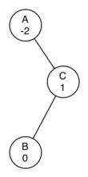
A 的平衡因子是 -2，但右子 C 是左重。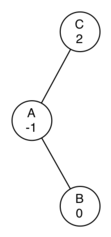
直接左旋 A 的結果：C 的平衡因子變成 2，往另一邊不平衡。要解決這個問題，遵守下面兩條規則：
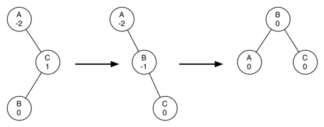
右欄的 rebalance 就是這兩條規則。重新平衡的成本：新節點插在葉節點，往上更新平衡因子最多 $\log_2 n$ 次，每層一次；發現不平衡時最多兩次旋轉，每次 $O(1)$。所以 put 仍然是 $O(\log_2 n)$，get 也保持 $O(\log_2 n)$。刪除節點以及之後的更新與重新平衡，留作練習。
過去兩章我們學了四種實作 map ADT 的方式。下表整理 worst-case 複雜度；注意 hash table 的 $O(1)$ 是平均，最差情況（全部碰撞）會退化到 $O(n)$。
| operation | Sorted Vector (binary search) |
Hash Table (平均) |
BST (最差) |
AVL Tree |
|---|---|---|---|---|
| put(key, val) | $O(n)$ | $O(1)$ | $O(n)$ | $O(\log n)$ |
| get(key) | $O(\log n)$ | $O(1)$ | $O(n)$ | $O(\log n)$ |
| contains(key) | $O(\log n)$ | $O(1)$ | $O(n)$ | $O(\log n)$ |
| remove(key) | $O(n)$ | $O(1)$ | $O(n)$ | $O(\log n)$ |
| 排序輸出 (in-order) | $O(n)$ | $O(n \log n)$ | $O(n)$ | $O(n)$ |
unordered_map、Java HashMap）。std::map、Java TreeMap 用紅黑樹；AVL 是它的近親）。priority_queue），不需要完整排序就能 $O(\log n)$ 操作。
這一章你學到的概念是現代軟體系統的基石：
「看到階層、想到遞迴、寫成樹」：這是這一章最值得帶走的思考方式。
BinaryTree：key 加上 leftChild、rightChild 兩個指標，NULL 表示空子樹；insertLeft／insertRight 遇到既有子節點時把它往下推一層。buildParseTree 用四條規則加上一個 parent stack 建樹，evaluate 遞迴地先算左右子樹再套用運算子。postordereval），中序加括號就是 printExp。(i - 1) / 2。insert 接在尾端再 percUp，delMin 把最後一個搬到根再 percDown，都是 $O(\log n)$；由下往上的 buildHeap 是 $O(n)$。put、get、contains、remove 都沿著一條路徑走，成本是 $O(h)$；鍵重複時 put 只更新值。刪除分三種情況：葉節點、一個子節點、兩個子節點（用後繼者取代）。因為子節點本身就是一棵 BinaryTree。回傳 BinaryTree* 之後，可以接著用 -> 對子樹呼叫 insertLeft、setRootVal 等操作，一路往下修改；空的子樹則回傳 NULL。如果回傳複本，修改的就不是樹裡的節點。
看「根」排在第幾個：前序是根在最前（根、左、右），中序是根在中間（左、根、右），後序是根在最後（左、右、根）。左子樹永遠在右子樹之前。
不是。堆積只保證父節點不大於子節點，所以最小值一定在 heap[0]；兄弟節點之間、不同子樹之間沒有大小關係。例如 heapify 十個數的結果 3 4 9 5 12 15 10 8 14 18 就不是遞增的。要得到排序結果，得反覆 delMin，也就是練習 2 的 heapSort。
索引 $i$ 的左子在 $2i+1$。當 $i \ge$ heap.size() / 2 時，$2i+1$ 已經超出 vector 的範圍，這些節點都是葉節點，自己就滿足堆積性質。所以從最後一個非葉節點開始往前做 percDown 就夠了。
雜湊表平均 $O(1)$，但鍵沒有順序。BST 可以用中序走訪依鍵的順序列出所有資料，也方便找最小、最大或某個範圍的鍵；平衡的 BST（例如 AVL 樹，或 std::map 常用的紅黑樹）還保證最差 $O(\log n)$。
每個選項都有解說：選錯也點開看看為什麼錯。全對之後再往下翻詞彙卡。
詞彙卡涵蓋本章的關鍵術語，已譯為繁體中文，正面附英文原名。先看正面術語，試著說出定義，再翻面核對；不熟的詞可以洗牌後再練習。